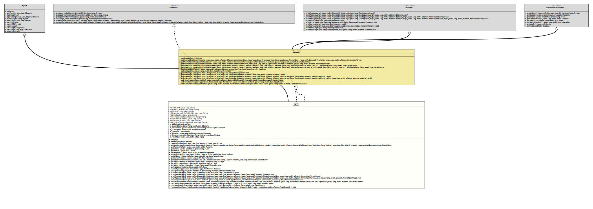

Package org.tquadrat.foundation.ap
Class APBase
java.lang.Object
org.tquadrat.foundation.ap.APBase
- All Implemented Interfaces:
Messager,ProcessingEnvironment,Processor,APHelper
@ClassVersion(sourceVersion="$Id: APBase.java 933 2021-07-03 13:32:17Z tquadrat $")
@API(status=STABLE,
since="0.1.0")
public abstract class APBase
extends Object
implements Processor, APHelper
The abstract base class for annotation processors for the Foundation
Library.
- Author:
- Thomas Thrien (thomas.thrien@tquadrat.org)
- Version:
- $Id: APBase.java 933 2021-07-03 13:32:17Z tquadrat $
- Since:
- 0.1.0
- UML Diagram
-

UML Diagram for "org.tquadrat.foundation.ap.APBase"
{kind=link}
-
Field Summary
FieldsModifier and TypeFieldDescriptionstatic final StringThe name of the annotation processor option that enables the emission of some debug information into the generated code: "org.tquadrat.foundation.ap.addDebugOutput".private booleanThe flag that indicates whether some debug information should be emitted to the generated code.private ElementsThe implementation of some utility methods for operating on elements.private ProcessingEnvironmentThe processing environment.private FilerThe filer that is used to create new source, class, or auxiliary files.private booleanA flag that indicates whether Maven is active.private MessagerTheMessagerthat is used to report errors, warnings, and other notices.The options for this annotation processor.private TypesThe implementation of some utility methods for operating on types.static final StringThe name of the annotation processor option for the currently active Maven goal: "org.tquadrat.foundation.ap.maven.goal".static final StringMessage: "%s: Only fields may be annotated with \'%s\'".static final StringMessage: "Only allowed for fields".static final StringThe message that indicates the illegal use of an annotation: "%s: Illegal use of annotation \'%s\'".static final StringThe message that indicates that more than one element is annotated with the given annotation: "%s: Multiple elements are annotated with \'%s\'".static final StringThe message that indicates that more than one field is annotated with the given annotation: "%s: Multiple fields are annotated with \'%s\'".static final StringThe message that indicates that a String constant is required: "\'%s\' needs to be a String constant".static final StringThe name for sub-package that holds the generated configuration bean classes: "generated". -
Constructor Summary
Constructors -
Method Summary
Modifier and TypeMethodDescriptionfinal booleanReturns the flag that indicates whether some debug information should be emitted to the generated code.private final StringAdds the name of the annotation processor to the given message.final Iterable<? extends Completion>getCompletions(Element element, AnnotationMirror annotation, ExecutableElement member, String userText) final Elementsfinal FilergetFiler()final Localefinal MessagerRetrieves the option with the given name from the annotation processors startup options.final SourceVersionprotected abstract Collection<Class<? extends Annotation>>Returns the classes for the supported annotations.final SourceVersionfinal Typesfinal voidinit(ProcessingEnvironment processingEnv) final voidprintMessage(Diagnostic.Kind kind, CharSequence msg) final voidprintMessage(Diagnostic.Kind kind, CharSequence msg, Element element) final voidprintMessage(Diagnostic.Kind kind, CharSequence msg, Element element, AnnotationMirror annotation) final voidprintMessage(Diagnostic.Kind kind, CharSequence msg, Element element, AnnotationMirror annotation, AnnotationValue value) abstract booleanprocess(Set<? extends TypeElement> annotations, RoundEnvironment roundEnvironment) protected final Optional<VariableElement>retrieveAnnotatedField(Collection<? extends TypeElement> annotations, RoundEnvironment roundEnvironment, Class<? extends Annotation> annotationClass) Retrieves the field that is annotated with the given annotation.final voidretrieveInterfaces(TypeElement typeElement, Set<? super TypeElement> interfaces) Retrieves the interfaces are that implemented or extended by the given type element.Methods inherited from class java.lang.Object
clone, equals, finalize, getClass, hashCode, notify, notifyAll, toString, wait, wait, waitMethods inherited from interface org.tquadrat.foundation.ap.APHelper
getAnnotationMirror, getAnnotationValue, getAnnotationValue, getTypeMirrorFromAnnotationValue, getTypeMirrorFromAnnotationValue, hasAnnotationMethods inherited from interface javax.annotation.processing.ProcessingEnvironment
isPreviewEnabled
-
Field Details
-
PACKAGE_NAME
The name for sub-package that holds the generated configuration bean classes: "generated".- See Also:
-
ADD_DEBUG_OUTPUT
The name of the annotation processor option that enables the emission of some debug information into the generated code: "org.tquadrat.foundation.ap.addDebugOutput".- See Also:
-
MAVEN_GOAL
The name of the annotation processor option for the currently active Maven goal: "org.tquadrat.foundation.ap.maven.goal".- See Also:
-
MSG_AnnotationOnlyForFields
Message: "%s: Only fields may be annotated with \'%s\'".- See Also:
-
MSG_FieldsOnly
Message: "Only allowed for fields".- See Also:
-
MSG_IllegalAnnotationUse
The message that indicates the illegal use of an annotation: "%s: Illegal use of annotation \'%s\'".- See Also:
-
MSG_MultipleElements
The message that indicates that more than one element is annotated with the given annotation: "%s: Multiple elements are annotated with \'%s\'".- See Also:
-
MSG_MultipleFields
The message that indicates that more than one field is annotated with the given annotation: "%s: Multiple fields are annotated with \'%s\'".- See Also:
-
MSG_StringConstantRequired
The message that indicates that a String constant is required: "\'%s\' needs to be a String constant".- See Also:
-
m_AddDebugOutput
The flag that indicates whether some debug information should be emitted to the generated code. -
m_ElementUtils
The implementation of some utility methods for operating on elements. -
m_Environment
The processing environment. -
m_Filer
The filer that is used to create new source, class, or auxiliary files. -
m_IsMavenActive
A flag that indicates whether Maven is active. This is guessed by the existence of the option"org.tquadrat.foundation.ap.maven.goal". -
m_Messager
TheMessagerthat is used to report errors, warnings, and other notices. -
m_Options
The options for this annotation processor. -
m_TypeUtils
The implementation of some utility methods for operating on types.
-
-
Constructor Details
-
APBase
protected APBase()Creates a newAPBaseinstance.
-
-
Method Details
-
addDebugOutput
Returns the flag that indicates whether some debug information should be emitted to the generated code.
The value is controlled by the value of the annotation processor option "org.tquadrat.foundation.ap.addDebugOutput".
- Specified by:
addDebugOutputin interfaceAPHelper- Returns:
trueif the debug information should be added,falseif not.
-
composeMessage
Adds the name of the annotation processor to the given message.- Parameters:
msg- The raw message.- Returns:
- The enhanced message.
-
getCompletions
public final Iterable<? extends Completion> getCompletions(Element element, AnnotationMirror annotation, ExecutableElement member, String userText) - Specified by:
getCompletionsin interfaceProcessor
-
getElementUtils
- Specified by:
getElementUtilsin interfaceProcessingEnvironment
-
getFiler
- Specified by:
getFilerin interfaceProcessingEnvironment
-
getLocale
- Specified by:
getLocalein interfaceProcessingEnvironment
-
getMessager
- Specified by:
getMessagerin interfaceProcessingEnvironment
-
getOption
Retrieves the option with the given name from the annotation processors startup options.- Parameters:
option- The name of the option.- Returns:
- An instance of
Optionalthat holds the option value.
-
getOptions
- Specified by:
getOptionsin interfaceProcessingEnvironment
-
getSourceVersion
- Specified by:
getSourceVersionin interfaceProcessingEnvironment
-
getSupportedAnnotationClasses
Returns the classes for the supported annotations.- Returns:
- The supported annotations.
-
getSupportedAnnotationTypes
- Specified by:
getSupportedAnnotationTypesin interfaceProcessor
-
getSupportedOptions
- Specified by:
getSupportedOptionsin interfaceProcessor
-
getSupportedSourceVersion
- Specified by:
getSupportedSourceVersionin interfaceProcessor
-
getTypeUtils
- Specified by:
getTypeUtilsin interfaceProcessingEnvironment
-
init
-
printMessage
- Specified by:
printMessagein interfaceAPHelper- Specified by:
printMessagein interfaceMessager
-
printMessage
- Specified by:
printMessagein interfaceAPHelper- Specified by:
printMessagein interfaceMessager
-
printMessage
public final void printMessage(Diagnostic.Kind kind, CharSequence msg, Element element, AnnotationMirror annotation) - Specified by:
printMessagein interfaceAPHelper- Specified by:
printMessagein interfaceMessager
-
printMessage
public final void printMessage(Diagnostic.Kind kind, CharSequence msg, Element element, AnnotationMirror annotation, AnnotationValue value) - Specified by:
printMessagein interfaceAPHelper- Specified by:
printMessagein interfaceMessager
-
process
public abstract boolean process(Set<? extends TypeElement> annotations, RoundEnvironment roundEnvironment) -
retrieveAnnotatedField
protected final Optional<VariableElement> retrieveAnnotatedField(Collection<? extends TypeElement> annotations, RoundEnvironment roundEnvironment, Class<? extends Annotation> annotationClass) throws IllegalAnnotationError Retrieves the field that is annotated with the given annotation.- Parameters:
annotations- The annotation, as set toprocess(Set, RoundEnvironment).roundEnvironment- The environment for information about the current and prior round as set toprocess(Set, RoundEnvironment).annotationClass- The class of the annotation.- Returns:
- An instance of
Optionalthat holds the field. - Throws:
IllegalAnnotationError- The annotation is invalid.
-
retrieveInterfaces
Retrieves the interfaces are that implemented or extended by the given type element.- Specified by:
retrieveInterfacesin interfaceAPHelper- Parameters:
typeElement- The type element to inspect.interfaces- The already retrieved interfaces.
-